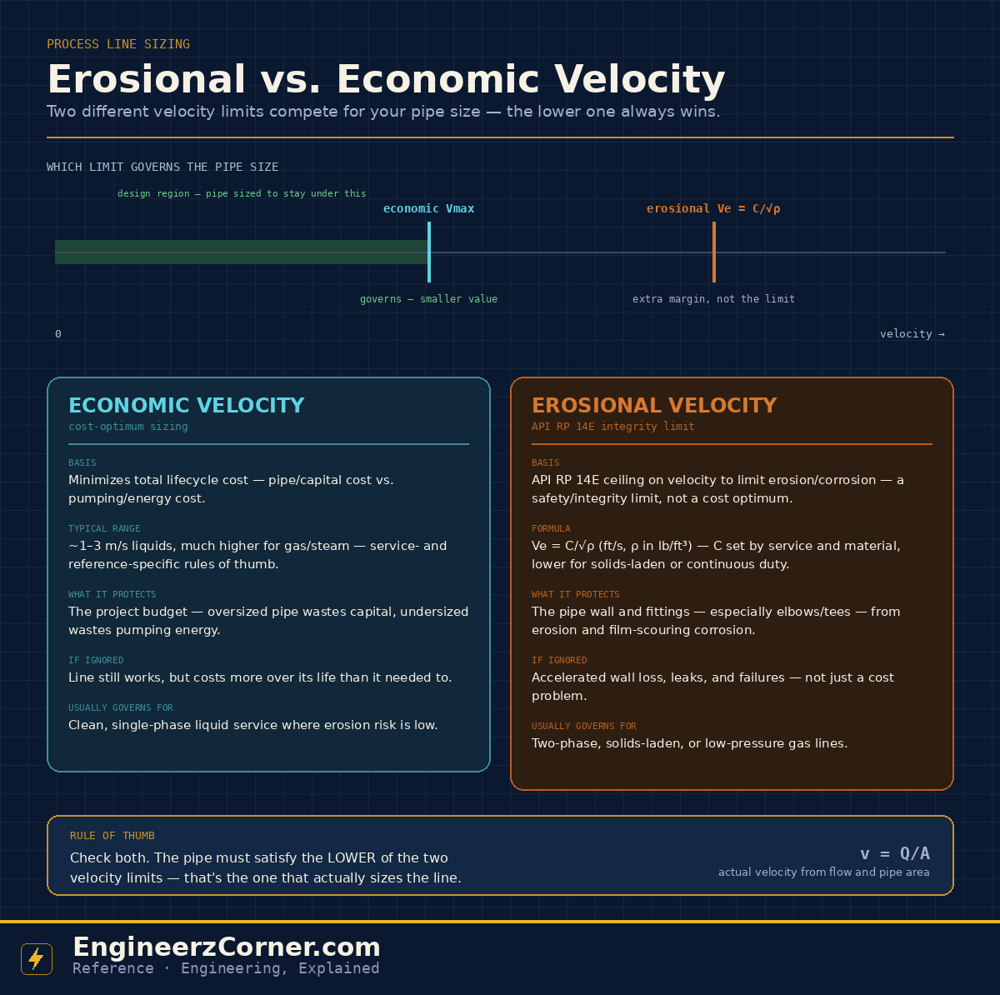

Ask "how fast should the fluid move in this pipe?" and there are two entirely different, entirely valid answers — and they rarely land on the same number. Economic velocity answers the question a project accountant would ask: what pipe size gives the lowest total cost over the line's life? Erosional velocity answers the question an integrity engineer would ask: what's the fastest this fluid can safely move before it starts eating the pipe wall? A correctly sized line respects both.

Erosional vs. economic velocity — two different limits, and the lower one always sets the pipe size.
1. Economic velocity — sizing for cost
A larger pipe diameter costs more to buy and install, but it slows the fluid down, which cuts friction loss and therefore pumping/compression energy over the line's operating life. A smaller pipe is cheaper up front but pushes velocity up, driving friction loss — and the pumping energy bill — higher for as long as the line runs. Economic velocity is the point where the sum of those two costs is lowest, and while it can be solved as a genuine optimization, most day-to-day sizing instead leans on published rule-of-thumb velocity ranges by service (roughly 1–3 m/s for liquid pump discharge, lower for suction, much higher for gas and steam), which approximate where that optimum tends to fall.
Ignoring the economic velocity doesn't break anything — the line still operates safely. It just means the project spent more than it needed to, either on oversized pipe or on the pumping energy an undersized line demands for decades.
2. Erosional velocity — sizing for integrity
The API RP 14E guideline sets a different kind of ceiling: Ve = C/√ρ (velocity in ft/s, density ρ in lb/ft³), where C is a constant set by the service — lower for solids-laden or continuous-duty lines, higher for clean, corrosion-resistant, or intermittent service. This isn't a cost optimum; it's a screening check against erosion from entrained solids or liquid droplets and against corrosion-film scouring, both of which concentrate hardest at elbows, tees and other points where flow direction changes.
Ignoring the erosional limit is a different kind of problem than ignoring the economic one — instead of a bigger utility bill, it's accelerated wall thinning, and eventually leaks or failures at the fittings that take the worst of it.
| Economic velocity | Erosional velocity | |
|---|---|---|
| Basis | Lowest lifecycle cost | API RP 14E integrity limit |
| Formula / source | Service rule-of-thumb ranges | Ve = C/√ρ |
| Protects | The project budget | The pipe wall & fittings |
| If ignored | Line still works, costs more | Erosion, corrosion, leaks, failure |
| Usually governs | Clean, single-phase liquid | Two-phase, solids-laden, low-P gas |
3. Which one actually governs?
Both are ceilings on velocity, so both push toward a larger pipe as they get more restrictive. The line has to satisfy the more restrictive of the two — meaning the pipe size must be large enough to keep velocity under the lower of the economic and erosional limits. In practice: compute the actual velocity from v = Q/A, compare it against both limits, and whichever limit is lower is the one that's actually sizing the line — the other one just rides along with comfortable margin.
For clean, single-phase liquid service, the erosional limit tends to sit well above typical economic velocities, so cost quietly governs and the erosional check just confirms there's margin. For two-phase flow, solids-laden streams, or low-pressure gas lines, the erosional velocity can drop well below what the economics alone would suggest — forcing a bigger, more expensive line than a cost-only sizing would ever choose, because integrity has to win that argument.
Quick understanding
Balances pipe cost against pumping energy. Usually the quieter constraint on clean liquid lines, where erosion risk is naturally low.
A hard API RP 14E ceiling protecting the pipe wall. Often the deciding constraint on two-phase, solids-laden, or low-pressure gas lines.
Sizing a line on economics alone risks an erosion problem the cost model never saw; sizing purely to the erosional limit without checking economics can leave money on the table on services where it wasn't actually the binding constraint. Checking both is the only way to know which one you're actually designing to.
Key takeaways
- ✓Economic velocity minimizes total lifecycle cost — pipe capital cost traded against pumping/energy cost over the line's life.
- ✓Erosional velocity (API RP 14E, Ve = C/√ρ) is a safety/integrity ceiling protecting the pipe wall and fittings, not a cost figure.
- ✓The pipe size must satisfy the lower of the two limits — that's the one that actually governs the line size.
- ✓Clean, single-phase liquid service is usually cost-governed; two-phase, solids-laden, or low-pressure gas lines are usually erosion-governed.
- ✓Both checks matter — one avoids overspending, the other avoids a wall-thickness problem the cost model would never catch.